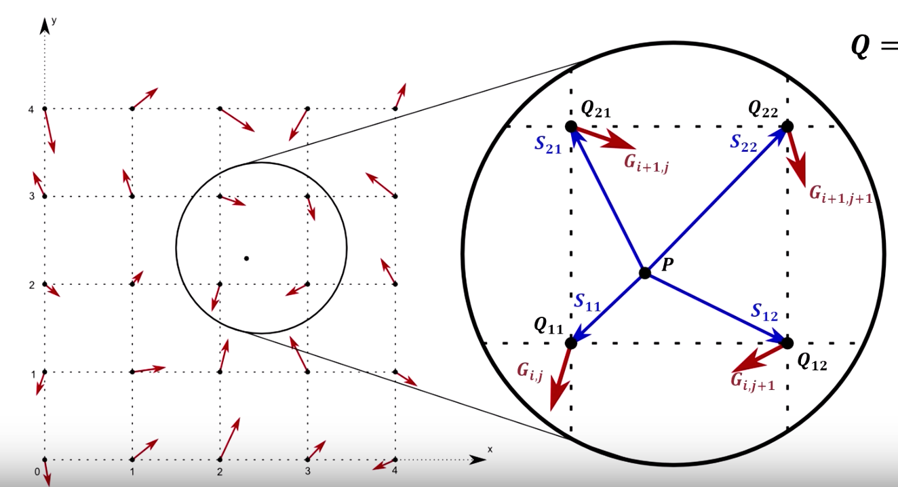

Abstract
Music visualization is often used by electronic music visualizers and media player software to generate real time, adaptive images based on the audio features of a piece of music. In this project, we want to delve into the techniques that people in this field use to detect the sound waves and transform them into visual imagery. We started off with several basic geometries, such as spheres and bars, and then moved onto more complex imagery like landscapes. We mainly used WebAudio API and Meyda.js to extract and process audio features and THREE.js and WEBGL frameworks to render the graphics. Several audio features that we explored include MFCC, RMS, chroma, and energy. We found that using complex noise models such as Simplex and Perlin noise lead to the most engaging visualizations and using features such as average frequency and MFCC helped tremendously towards creating realistic changes in the images.
Audio Visualizations on a Simple Sphere Geometry
The first visualization we attempted to create was a simple sphere that would change size and color according to frequencies in the music. We used the three.js framework to render a scene with a sphere. Once we generated a scene, we then used a listener from the Web Audio API to analyze the frequency domain data from the audio file. The frequencies provided from the audio context were then averaged into a single value that was then used to scale the radius of the sphere. Additionally, we normalized this average frequency value to a value between 0 and 1 by dividing it by the maximum frequency found in the frequency domain. We then mapped this normalized value to a specific color over the hex color scale as defined by HTML5. Below is a screenshot of the main code that changes attributes of the sphere. This code was built from looking at several audio visualization and three.js examples (outlined in the references) and then used as a framework to build later visualizations.
Below is an image of the sphere mesh. Additionally,
here is a short video of the animation.
Audio Visualizations on an Evenly Spaced Box Geometry
The previous visualization consolidated all of the audio information into one final average value. This seemed like a huge compression of information, so we decided to make use of more of the frequency bins. In this visualization, we created a scene with 60 box geometries, each with a height attribute that corresponds to the z-axis of the mesh. We then generated an array of frequency bins from our frequency domain calculation at each time step defined by an audio context for the audio file. We then traversed the array by the number of bars in our frequency bin and scaled the z-axis of the bar if the frequency value was large enough. Below is a code snippet that animates the various box geometries.
|
Animation of Box Geometries
|
Below is an image of the mesh of box geometries. Additionally,
here is a short video of the animation.
Perlin/Simplex Noise
A concept that we used in later visualizations to make them more compelling is Perlin Noise.
Unlike random noise, there is a smooth gradient between the randomly selected points. This
is achieved by first creating a simplex grid in the specified dimension. Then, calculate
a random gradient vector in each intersection in the simplex grid. To find the final value,
take the dot product of the gradient vectors and distance vectors to interpolate the value.
In our visualizations, this helped us change the position of the vertices in a smooth manner.
|
simplex grid in 2D space
|

randomy gradient vectors
|
|
difference between random and perlin noise
|
Audio Visualizations on a Sphere Mesh
This visualization tries to change the position of the vertices on a sphere's mesh in correspondence to the frequencies of the music. For the geometry, we decided to use a Geodesic polyhedron - a sphere created by subdividing an icosahedron.
Like the other visualizers, this one uses the AudioContext interface to preprocess the audio file. It gets the frequency domain data of the audio file and splits them into two equally sized arrays: lower frequencies and higher frequencies. It then calculates the average frequency for both of these arrays. For every single vertex, it recalculates the position by first normalizing the vertex.
The visualizer uses the vertex's position as well as the current time to seed the SimplexNoise instance
and randomly sample a noise from 3D.
It calculates the distance each vertex will be displaced by summing the radius of the original sphere, the lower frequency average, and the noise multiplied by the higher frequency average. The vertex is multiplied by this scalar and the mesh updates accordingly by recalculating the vertex and face normals.
|
Updating the vertex positions
|
Audio Visualizations on a Plane
This visualization tries to change the position of the vertices on a plane mesh using Simplex Noise.
Unlike the previous visualizations, this one uses RMS (root mean squared), which is essentially
the loudness, as the main audio feature
when displacing each vertex. Again, we seed the SimplexNoise with the time and vertex's position
to get a random value in 2D and amplify it by the RMS.
At the top, there is a musical scale at the top, and the color for each key changes depending on
how much of that key contributes to the current audio playing. This uses the chroma feature
of the audio file.
|
Updating the vertex positions
|
Audio Visualizations using Landscape Generation Techniques
To create an effect of generating landscape that aligns with the input audio file, we created mesh that consisted of a three.js PlaneBufferGeometry. We then calculated the average frequency of the input at particular time steps using the frequency domain representation given by the Web Audio API as explained before. We augmented this value with some randomly generated Perlin noise and added these random values to each vertex in the mesh with some smoothing constants to create the landscape visualization. We repeated this process for each frame in the animation loop. Below are some screenshots of the key parts of the code and an image of an example landscape.
|
Landscape Scene Generation
|
Challenges
Some challenges that we faced were how to display the audio features in a
visually compelling way. When we started off with just the sphere's radius and color changing,
we felt like the user wouldn't gain as much information out of the visuals. To combat this,
we looked into changing the actual vertices on the sphere mesh. Another tricky aspect of audio visualization
was integrating all the moving parts from obtaining audio features to applying these audio features to various
animation frames. It took a lot of playing around with parameters to make the animations smooth and compelling.
Here is a link to the google slides for our work and here is a link to our video that summarizes our work.
Contributions from each team member
Stephanie was in charge of creating the plane and sphere mesh visualizations that used Simplex Noise, as well as figuring out how to extract different audio features. Nipun developed the initial sphere audio visualization framework and then expanded it to create the bar visualization. He also worked on landscape generation. The third member of our group Lucas Pan unfortunately did not contribute to this project (we mentioned this as a concern in the project milestone form). After the milestone, we did not receive any communication from him and we presented the project in the project showcase without him. The work on this project as presented was solely done by Stephanie and Nipun.
Resources/References
- Simplex Noise Package
- Meyda.js framework
- Perlin Noise Explained
- Simplex Noise Explained
- Three.js Tutorial
- Audio Visualization Technical Overview